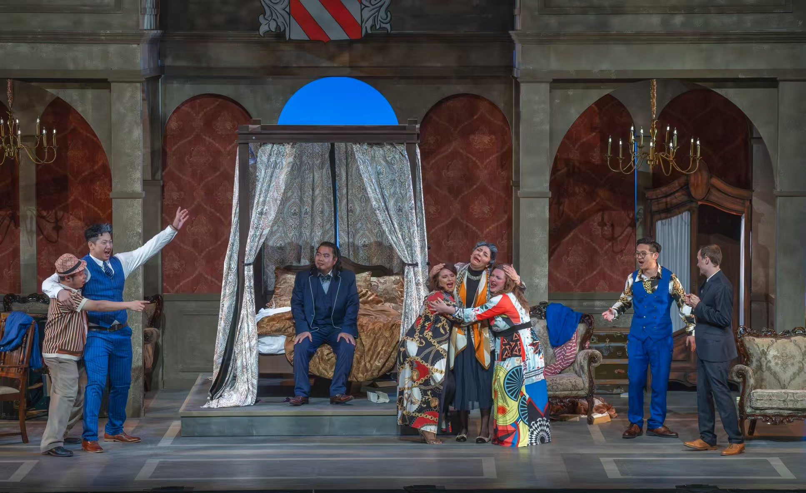
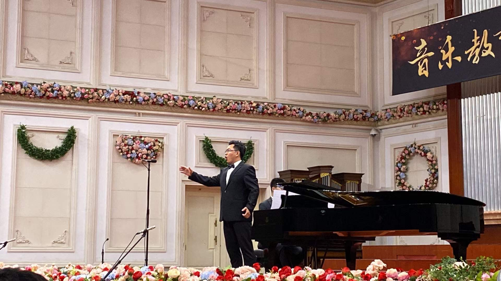
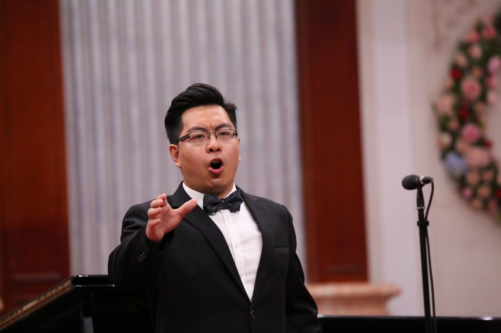
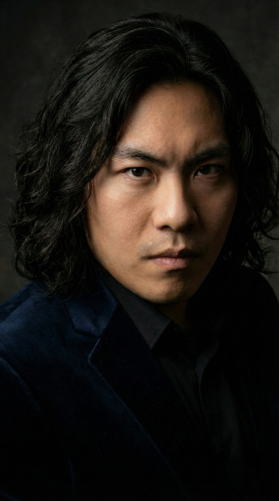

Photo Gallery照片墙






Baritone男中音
Maotong Yu is a baritone whose work spans opera, concert repertoire, and art song. He appeared in the title role of Puccini's Gianni Schicchi at the Lamont School of Music in 2025 and is scheduled to perform the role of Dr. Falke in Johann Strauss II's Die Fledermaus in 2026. 于茂同是一位男中音，其演出领域广泛涵盖歌剧、音乐会曲目及艺术歌曲。2025年，他在拉蒙特音乐学院（Lamont School of Music）排演的普契尼歌剧《贾尼·斯基基》（Gianni Schicchi）中饰演标题角色，并计划于2026年在小约翰·施特劳斯的歌剧《蝙蝠》（Die Fledermaus）中出演法尔克（Dr. Falke）一角。
Originally trained in vocal pedagogy at the Tianjin Conservatory of Music—where he earned both his Bachelor's and Master's degrees—he later completed a Vocal Performance Certificate at the Lamont School of Music in the 2024–2025 academic year, and will earn his Master of Music in Vocal Performance at the Lamont School of Music in 2027. He studies under Matthew Plenk and works closely with vocal coaches Dr. Beth Nielsen and Sahar Nouri, as well as conductors Sahar Nouri and Catherine Sailer, gaining substantial performance and collaborative experience. 他早年于天津音乐学院接受声乐教学专业的系统训练，并先后取得学士与硕士学位。此后，他在2024至2025学年于拉蒙特音乐学院获得了演奏家文凭，并预计将于2027年在该校获得声乐表演音乐硕士学位。他师从马修·普伦克（Matthew Plenk），并与声乐指导贝丝·尼尔森博士（Dr. Beth Nielsen）以及指挥家萨哈尔·努里（Sahar Nouri）和凯瑟琳·塞勒（Catherine Sailer）保持着密切合作，积累了丰富的舞台演出与合作经验。
Maotong Yu's artistic philosophy emphasizes expressive vocalism and emotional resonance, striving to integrate refined vocal technique with a deep musical sensibility in every performance. As a high baritone, he is also drawn to exploring demanding contemporary repertoire, including roles such as Oppenheimer in John Adams's Dr. Atomic and Prospero in Thomas Adès's The Tempest. Through these challenges, he continues to expand his vocal capabilities while pursuing greater dramatic depth and artistic breadth. 于茂同的艺术理念强调富有表现力的演唱与情感共鸣，致力于在每一次表演中将精湛的声乐技巧与深厚的音乐感悟力融为一体。作为一名高男中音，他也十分热衷于探索极具挑战性的当代歌剧曲目，例如约翰·亚当斯（John Adams）《原子博士》（Dr. Atomic）中的奥本海默（Oppenheimer），以及托马斯·阿德斯（Thomas Adès）《暴风雨》（The Tempest）中的普罗斯佩罗（Prospero）。通过迎接这些挑战，他不断拓展自身的声乐潜能，同时追求更深层的戏剧张力与更广阔的艺术境界。
Beyond performance, Yu is active in digital music initiatives. He developed the interactive game Sonarium Eternum and maintains a free online score library dedicated to the promotion and accessibility of Chinese classical music. 在舞台演出之外，于茂同还积极投身于数字音乐项目。他开发了一款名为 Sonarium Eternum的互动游戏，并维护着一个免费在线乐谱库，致力于推动中国古典音乐的传播与普及。
| Date日期 | Event活动 | Location地点 | Details详情 |
|---|---|---|---|
| April 23, 20262026年4月23日 7:30pm - 9:30pm |
Lamont Opera Theatre: “Die Fledermaus”拉蒙特歌剧院：《蝙蝠》 | Newman Center, Gates Concert Hall纽曼中心，盖茨音乐厅 | View查看 |
| April 25, 20262026年4月25日 7:30pm - 9:30pm |
Lamont Opera Theatre: “Die Fledermaus”拉蒙特歌剧院：《蝙蝠》 | Newman Center, Gates Concert Hall纽曼中心，盖茨音乐厅 | View查看 |
| May 28, 20262026年5月28日 7:30pm - 9:00pm |
Opera Workshop歌剧工作坊 | Newman Center, Hamilton Hall纽曼中心，汉密尔顿音乐厅 | View查看 |


